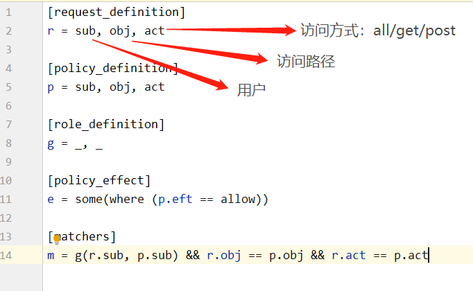

Casbin是一个强大的、高效的开源访问控制框架
rbac一般需要5张表：用户表、菜单表、权限表、用户权限表、权限菜单表
casbin只需要：用户表、策略表、菜单表（甚至可以不用）
模型文件
1. request_definition
请求入参（实体，资源，方法）
举个栗子： 譬如 A1这个用户 要访问/users ,GET 请求，模型文件r = sub, obj, act是这样的，那么你的策略文件就写成：A1,/users,GET
2. policy_definition
策略（实体，资源，方法）
3. role_definition
角色域，g = _, _
这里的意思是g收到两个参数 g = 用户，角色
4. policy_effect
对policy生效范围的定义
看看经过下面那些匹配规则后的返回值是否有一条等于里面那个allow
matchers
进来的实体，资源，方法，能不能在权限表（p）里面找到一个一模一样的
策略模型
添加权限
enforcer.AddPolicy(uId, muneId, "All")
验证权限
hasAccess, err = enforcer.Enforce(uId, muneId, "All")